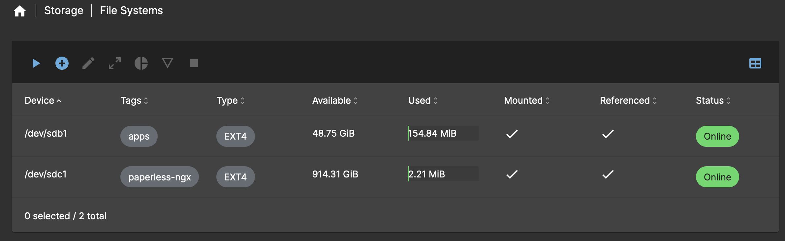
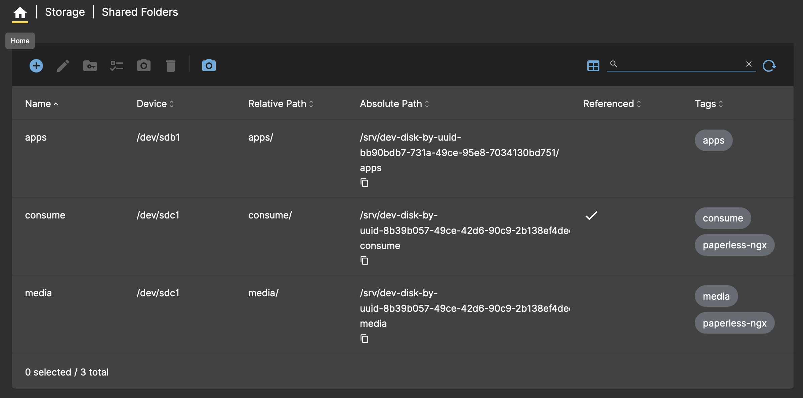
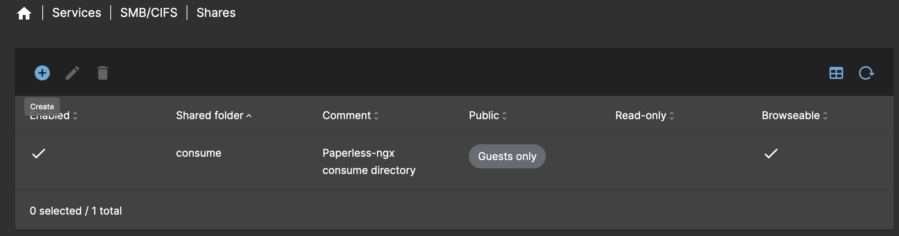

Media Server
Media server for hosting files and various containerised services.
What is OpenMediaVault?
OpenMediaVault is the next generation network attached storage (NAS) solution based on Debian Linux. It contains services like SSH, (S)FTP, SMB/CIFS, RSync and many more ready to use.
Deployment
The media server is deployed as a VM on Proxmox using the OpenMediaVault ISO.
-
Download the ISO to the Node 1 storage.
-
Navigate to
proxmox01>Create VM. -
Provide the following details for
Generaland click Next:Setting Value Name media01Node proxmox01Start at boot ❌ -
Under
OS, select the storage where the ISO was downloaded to and choose the Proxmox Backup Server ISO image. Click Next. -
Under
System, select theVirtIO SCSI Singlecontroller and click Next. -
Provide the following details for
Disksand click Next:Setting Value Bus/Device SCSIStorage local-lvmSize 50GiBFormat Raw disk image (raw)Discard ✅ SSD Emulation ✅ Setting Value Bus/Device SCSIStorage lv-ssd-samsungSize 930GiBFormat Raw disk image (raw)Discard ✅ SSD Emulation ✅ Setting Value Bus/Device SCSIStorage lv-ssd-crucialSize 50GiBFormat Raw disk image (raw)Discard ✅ SSD Emulation ✅ -
Provide the following details for
CPUand click Next:Setting Value Cores 4Type host -
Provide the following details for
Memoryand click Next:Setting Value Memory (MiB) 8192Ballooning Device ✅ Minimum Memory 1024 -
Leave
Networkas default, click Next and confirm deployment. -
Start the
media01VM and open the console to begin the installation. -
Follow the on-screen instructions to install OpenMediaVault, when prompted enter the following details:
Setting Value Hostname media01Domain Name net.dbren.ukEmail Enter email Password Enter password Default Gateway 192.168.0.1Subnet Mask 255.255.255.0IP Address 192.168.0.9 -
Once installation has completed, login to the web interface using the FQDN and credentials entered during installation.
Post Installation
Info
Where required, make sure to apply changes before moving on to the next step. A yellow box will appear after certain operations if this is necessary.
-
Navigate to
System>Date & Timeand set the time zone toEurope/London. -
Under
Storage>File Systems, click the+symbol and use the following configuration, repeating for each file system:Setting Value File System EXT4Device /dev/sdbLabel appsSetting Value File System EXT4Device /dev/sdcLabel paperless-ngxClick Save when finished.
The file system configuration should look like below:

-
Navigate to
Storage>Shared Foldersand click the+symbol and use the following configuration, repeating for each shared folder:Setting Value Name appsDevice /dev/sdb1Permissions Administrator: read/write, Users: read/write, Others: read-onlyRelative Path apps/Tags appsSetting Value Name consumeDevice /dev/sdc1Permissions Everyone: read/writeRelative Path consume/Tags consume,paperless-ngxSetting Value Name mediaDevice /dev/sdc1Permissions Administrator: read/write, Users: read/write, Others: read-onlyRelative Path media/Tags appsTags media,paperless-ngxThe shared folder configuration should look like below:

-
Navigate to
Services>SSHand configure the following settings:Setting Value Password Authentication ❌ Public Key Authentication ✅
SMB/CIFS
The steps below can be used to create a SMB/CIFS share for the Paperless-ngx consume directory.
-
Navigate to
Services>SMB/CIFS>Settingsand configure the following settings:Setting Value Enabled ✅ Browsable ✅ Minimum protocol version SMB3 -
Navigate to
Services>SMB/CIFS>Sharesand click the+symbol to add a new share with the following configuration:Setting Value Enabled ✅ Shared Folder consume [consume, paperless-ngx]Comment Paperless-ngx consume directoryPublic Guests only Browsable ✅ Inherit ACLs ✅ Inherit Permissions ✅ The share configuration should look like below:
